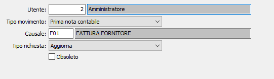

Configurazione causali
La tabella consente di parametrizzare l’accesso all’operazione di archiviazione documentale relativa ai documenti ricevuti.

UTENTE: indicare il codice dell'utente abilitato all'archiviazione. Sul campo sono disponibili le funzioni di ricerca (F9) sulla tabella utenti.
TIPO MOVIMENTO: definisce il tipo di movimentazione per cui sarà configurata la causale:
Tutti
Prima nota contabile
DDT acquisto
Fattura di acquisto
Fattura terzista
Rientro da terzista
CAUSALE: indicare la causale interessata alla configurazione, il campo è attivo solo se il campo precedente ha un valore diverso da Tutti. Sul campo sono disponibili le funzioni di ricerca (F9) sulla tabella inerente al campo tipo movimento.
TIPO RICHIESTA: definisce l'operazione da effettuare per quanto configurato in precedenza:
Nessuna: non effettua nessuna operazione
Aggiorna: effettua l'aggiornamento sul database dell'archiviazione documentale.
Su richiesta: effettua l'aggiornamento sul database dell'archiviazione documentale previa richiesta di conferma all'utente.
OBSOLETO: flag attivabile dall’utente per inibire il possibile utilizzo dell’elemento di tabella in esame nelle successive transazioni.